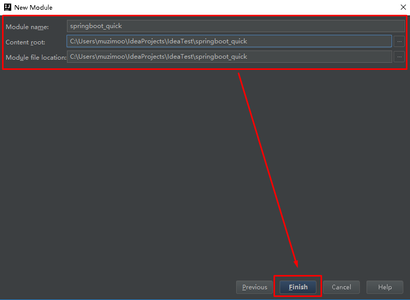
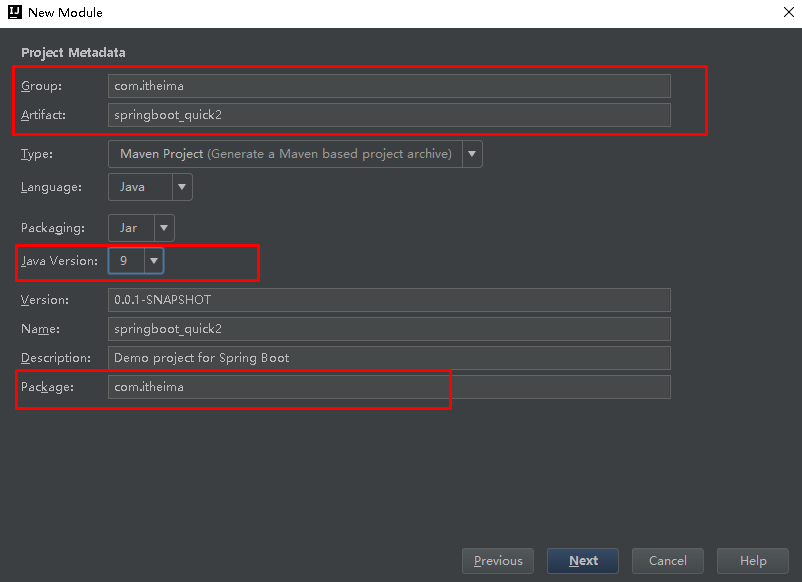
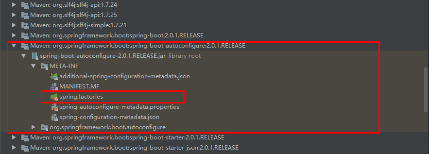
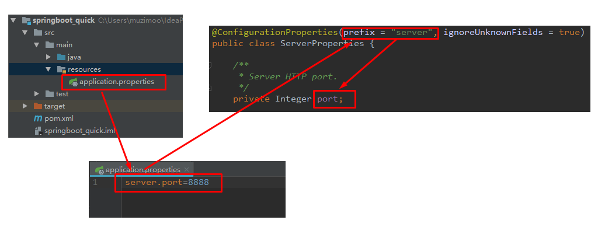
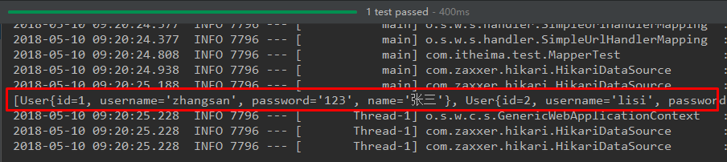

SpringBoot基础学习目标：一、SpringBoot简介1.1 原有Spring优缺点分析1.1.1 Spring的优点分析1.1.2 Spring的缺点分析1.2 SpringBoot的概述1.2.1 SpringBoot解决上述Spring的缺点1.2.2 SpringBoot的特点1.2.3 SpringBoot的核心功能二、SpringBoot快速入门2.1 代码实现2.1.1 创建Maven工程2.1.2 添加SpringBoot的起步依赖2.1.3 编写SpringBoot引导类2.1.4 编写Controller2.1.5 测试2.2 快速入门解析2.2.2 SpringBoot代码解析2.2.3 SpringBoot工程热部署2.2.4 使用idea快速创建SpringBoot项目三、SpringBoot原理分析3.1 起步依赖原理分析3.1.1 分析spring-boot-starter-parent3.1.2 分析spring-boot-starter-web3.2 自动配置原理解析四、SpringBoot的配置文件4.1 SpringBoot配置文件类型4.1.1 SpringBoot配置文件类型和作用4.1.2 application.yml配置文件4.1.2.1 yml配置文件简介4.1.2.2 yml配置文件的语法4.1.2.2.1 配置普通数据4.1.2.2.2 配置对象数据4.1.2.2.2 配置Map数据 4.1.2.2.3 配置数组（List、Set）数据4.1.3 SpringBoot配置信息的查询4.2 配置文件与配置类的属性映射方式4.2.1 使用注解@Value映射4.2.2 使用注解@ConfigurationProperties映射五、SpringBoot与整合其他技术5.1 SpringBoot整合Mybatis5.1.1 添加Mybatis的起步依赖5.1.2 添加数据库驱动坐标5.1.3 添加数据库连接信息5.1.4 创建user表5.1.5 创建实体Bean5.1.6 编写Mapper5.1.7 配置Mapper映射文件5.1.8 在application.properties中添加mybatis的信息5.1.9 编写测试Controller5.1.10 测试5.2 SpringBoot整合Junit5.2.1 添加Junit的起步依赖5.2.2 编写测试类5.2.3 控制台打印信息5.3 SpringBoot整合Spring Data JPA5.3.1 添加Spring Data JPA的起步依赖5.3.2 添加数据库驱动依赖5.3.3 在application.properties中配置数据库和jpa的相关属性5.3.4 创建实体配置实体5.3.5 编写UserRepository5.3.6 编写测试类5.3.7 控制台打印信息5.4 SpringBoot整合Redis5.4.1 添加redis的起步依赖5.4.2 配置redis的连接信息5.4.3 注入RedisTemplate测试redis操作
SpringBoot基础
学习目标：
- 能够理解Spring的优缺点
- 能够理解SpringBoot的特点
- 能够理解SpringBoot的核心功能
- 能够搭建SpringBoot的环境
- 能够完成application.properties配置文件的配置
- 能够完成application.yml配置文件的配置
- 能够使用SpringBoot集成Mybatis
- 能够使用SpringBoot集成Junit
- 能够使用SpringBoot集成SpringData JPA
一、SpringBoot简介
1.1 原有Spring优缺点分析
1.1.1 Spring的优点分析
Spring是Java企业版（Java Enterprise Edition，JEE，也称J2EE）的轻量级代替品。无需开发重量级的Enterprise JavaBean（EJB），Spring为企业级Java开发提供了一种相对简单的方法，通过依赖注入和面向切面编程，用简单的Java对象（Plain Old Java Object，POJO）实现了EJB的功能。
1.1.2 Spring的缺点分析
虽然Spring的组件代码是轻量级的，但它的配置却是重量级的。一开始，Spring用XML配置，而且是很多XML配置。Spring 2.5引入了基于注解的组件扫描，这消除了大量针对应用程序自身组件的显式XML配置。Spring 3.0引入了基于Java的配置，这是一种类型安全的可重构配置方式，可以代替XML。
所有这些配置都代表了开发时的损耗。因为在思考Spring特性配置和解决业务问题之间需要进行思维切换，所以编写配置挤占了编写应用程序逻辑的时间。和所有框架一样，Spring实用，但与此同时它要求的回报也不少。
除此之外，项目的依赖管理也是一件耗时耗力的事情。在环境搭建时，需要分析要导入哪些库的坐标，而且还需要分析导入与之有依赖关系的其他库的坐标，一旦选错了依赖的版本，随之而来的不兼容问题就会严重阻碍项目的开发进度。
1.2 SpringBoot的概述
1.2.1 SpringBoot解决上述Spring的缺点
SpringBoot对上述Spring的缺点进行的改善和优化，基于约定优于配置的思想，可以让开发人员不必在配置与逻辑业务之间进行思维的切换，全身心的投入到逻辑业务的代码编写中，从而大大提高了开发的效率，一定程度上缩短了项目周期。
1.2.2 SpringBoot的特点
- 为基于Spring的开发提供更快的入门体验
- 开箱即用，没有代码生成，也无需XML配置。同时也可以修改默认值来满足特定的需求
- 提供了一些大型项目中常见的非功能性特性，如嵌入式服务器、安全、指标，健康检测、外部配置等
- SpringBoot不是对Spring功能上的增强，而是提供了一种快速使用Spring的方式
1.2.3 SpringBoot的核心功能
起步依赖
起步依赖本质上是一个Maven项目对象模型（Project Object Model，POM），定义了对其他库的传递依赖，这些东西加在一起即支持某项功能。
简单的说，起步依赖就是将具备某种功能的坐标打包到一起，并提供一些默认的功能。
自动配置
Spring Boot的自动配置是一个运行时（更准确地说，是应用程序启动时）的过程，考虑了众多因素，才决定Spring配置应该用哪个，不该用哪个。该过程是Spring自动完成的。
注意：起步依赖和自动配置的原理剖析会在第三章《SpringBoot原理分析》进行详细讲解
二、SpringBoot快速入门
2.1 代码实现
2.1.1 创建Maven工程
使用idea工具创建一个maven工程，该工程为普通的java工程即可




2.1.2 添加SpringBoot的起步依赖
SpringBoot要求，项目要继承SpringBoot的起步依赖spring-boot-starter-parent
xxxxxxxxxx<parent> <groupId>org.springframework.boot</groupId> <artifactId>spring-boot-starter-parent</artifactId> <version>2.0.1.RELEASE</version></parent>SpringBoot要集成SpringMVC进行Controller的开发，所以项目要导入web的启动依赖
xxxxxxxxxx<dependencies> <dependency> <groupId>org.springframework.boot</groupId> <artifactId>spring-boot-starter-web</artifactId> </dependency></dependencies>
2.1.3 编写SpringBoot引导类
要通过SpringBoot提供的引导类起步SpringBoot才可以进行访问
xpackage com.itheima;import org.springframework.boot.SpringApplication;import org.springframework.boot.autoconfigure.SpringBootApplication;public class MySpringBootApplication { public static void main(String[] args) { SpringApplication.run(MySpringBootApplication.class); }}2.1.4 编写Controller
在引导类MySpringBootApplication同级包或者子级包中创建QuickStartController
xxxxxxxxxxpackage com.itheima.controller;import org.springframework.stereotype.Controller;import org.springframework.web.bind.annotation.RequestMapping;import org.springframework.web.bind.annotation.ResponseBody;public class QuickStartController { ("/quick") public String quick(){ return "springboot 访问成功!"; } }2.1.5 测试
执行SpringBoot起步类的主方法，控制台打印日志如下：
xxxxxxxxxx. ____ _ __ _ _/\\ / ___'_ __ _ _(_)_ __ __ _ \ \ \ \( ( )\___ | '_ | '_| | '_ \/ _` | \ \ \ \\\/ ___)| |_)| | | | | || (_| | ) ) ) )' |____| .__|_| |_|_| |_\__, | / / / /=========|_|==============|___/=/_/_/_/:: Spring Boot :: (v2.0.1.RELEASE)2018-05-08 14:29:59.714 INFO 5672 --- [ main] com.itheima.MySpringBootApplication : Starting MySpringBootApplication on DESKTOP-RRUNFUH with PID 5672 (C:\Users\muzimoo\IdeaProjects\IdeaTest\springboot_quick\target\classes started by muzimoo in C:\Users\muzimoo\IdeaProjects\IdeaTest)... ... ...o.s.w.s.handler.SimpleUrlHandlerMapping : Mapped URL path [/**] onto handler of type [class org.springframework.web.servlet.resource.ResourceHttpRequestHandler]2018-05-08 14:30:03.126 INFO 5672 --- [ main] o.s.j.e.a.AnnotationMBeanExporter : Registering beans for JMX exposure on startup2018-05-08 14:30:03.196 INFO 5672 --- [ main] o.s.b.w.embedded.tomcat.TomcatWebServer : Tomcat started on port(s): 8080 (http) with context path ''2018-05-08 14:30:03.206 INFO 5672 --- [ main] com.itheima.MySpringBootApplication : Started MySpringBootApplication in 4.252 seconds (JVM running for 5.583)
通过日志发现，Tomcat started on port(s): 8080 (http) with context path ''
tomcat已经起步，端口监听8080，web应用的虚拟工程名称为空
打开浏览器访问url地址为：http://localhost:8080/quick

2.2 快速入门解析
2.2.2 SpringBoot代码解析
- @SpringBootApplication：标注SpringBoot的启动类，该注解具备多种功能（后面详细剖析）
- SpringApplication.run(MySpringBootApplication.class) 代表运行SpringBoot的启动类，参数为SpringBoot启动类的字节码对象
2.2.3 SpringBoot工程热部署
我们在开发中反复修改类、页面等资源，每次修改后都是需要重新启动才生效，这样每次启动都很麻烦，浪费了大量的时间，我们可以在修改代码后不重启就能生效，在 pom.xml 中添加如下配置就可以实现这样的功能，我们称之为热部署。
xxxxxxxxxx<!--热部署配置--><dependency> <groupId>org.springframework.boot</groupId> <artifactId>spring-boot-devtools</artifactId></dependency>注意：IDEA进行SpringBoot热部署失败原因
出现这种情况，并不是热部署配置问题，其根本原因是因为Intellij IEDA默认情况下不会自动编译，需要对IDEA进行自动编译的设置，如下：

然后 Shift+Ctrl+Alt+/，选择Registry

2.2.4 使用idea快速创建SpringBoot项目




通过idea快速创建的SpringBoot项目的pom.xml中已经导入了我们选择的web的起步依赖的坐标
xxxxxxxxxx <project xmlns="http://maven.apache.org/POM/4.0.0" xmlns:xsi="http://www.w3.org/2001/XMLSchema-instance" xsi:schemaLocation="http://maven.apache.org/POM/4.0.0 http://maven.apache.org/xsd/maven-4.0.0.xsd"> <modelVersion>4.0.0</modelVersion> <groupId>com.itheima</groupId> <artifactId>springboot_quick2</artifactId> <version>0.0.1-SNAPSHOT</version> <packaging>jar</packaging> <name>springboot_quick2</name> <description>Demo project for Spring Boot</description> <parent> <groupId>org.springframework.boot</groupId> <artifactId>spring-boot-starter-parent</artifactId> <version>2.0.1.RELEASE</version> <relativePath/> <!-- lookup parent from repository --> </parent> <properties> <project.build.sourceEncoding>UTF-8</project.build.sourceEncoding> <project.reporting.outputEncoding>UTF-8</project.reporting.outputEncoding> <java.version>9</java.version> </properties> <dependencies> <dependency> <groupId>org.springframework.boot</groupId> <artifactId>spring-boot-starter-web</artifactId> </dependency> <dependency> <groupId>org.springframework.boot</groupId> <artifactId>spring-boot-starter-test</artifactId> <scope>test</scope> </dependency> </dependencies> <build> <plugins> <plugin> <groupId>org.springframework.boot</groupId> <artifactId>spring-boot-maven-plugin</artifactId> </plugin> </plugins> </build></project>可以使用快速入门的方式创建Controller进行访问，此处不再赘述
三、SpringBoot原理分析
3.1 起步依赖原理分析
3.1.1 分析spring-boot-starter-parent
按住Ctrl点击pom.xml中的spring-boot-starter-parent，跳转到了spring-boot-starter-parent的pom.xml，xml配置如下（只摘抄了部分重点配置）：
xxxxxxxxxx<parent> <groupId>org.springframework.boot</groupId> <artifactId>spring-boot-dependencies</artifactId> <version>2.0.1.RELEASE</version> <relativePath>../../spring-boot-dependencies</relativePath></parent>按住Ctrl点击pom.xml中的spring-boot-starter-dependencies，跳转到了spring-boot-starter-dependencies的pom.xml，xml配置如下（只摘抄了部分重点配置）：
xxxxxxxxxx<properties> <activemq.version>5.15.3</activemq.version> <antlr2.version>2.7.7</antlr2.version> <appengine-sdk.version>1.9.63</appengine-sdk.version> <artemis.version>2.4.0</artemis.version> <aspectj.version>1.8.13</aspectj.version> <assertj.version>3.9.1</assertj.version> <atomikos.version>4.0.6</atomikos.version> <bitronix.version>2.1.4</bitronix.version> <build-helper-maven-plugin.version>3.0.0</build-helper-maven-plugin.version> <byte-buddy.version>1.7.11</byte-buddy.version> ... ... ...</properties><dependencyManagement> <dependencies> <dependency> <groupId>org.springframework.boot</groupId> <artifactId>spring-boot</artifactId> <version>2.0.1.RELEASE</version> </dependency> <dependency> <groupId>org.springframework.boot</groupId> <artifactId>spring-boot-test</artifactId> <version>2.0.1.RELEASE</version> </dependency> ... ... ... </dependencies></dependencyManagement><build> <pluginManagement> <plugins> <plugin> <groupId>org.jetbrains.kotlin</groupId> <artifactId>kotlin-maven-plugin</artifactId> <version>${kotlin.version}</version> </plugin> <plugin> <groupId>org.jooq</groupId> <artifactId>jooq-codegen-maven</artifactId> <version>${jooq.version}</version> </plugin> <plugin> <groupId>org.springframework.boot</groupId> <artifactId>spring-boot-maven-plugin</artifactId> <version>2.0.1.RELEASE</version> </plugin> ... ... ... </plugins> </pluginManagement></build>从上面的spring-boot-starter-dependencies的pom.xml中我们可以发现，一部分坐标的版本、依赖管理、插件管理已经定义好，所以我们的SpringBoot工程继承spring-boot-starter-parent后已经具备版本锁定等配置了。所以起步依赖的作用就是进行依赖的传递。
3.1.2 分析spring-boot-starter-web
按住Ctrl点击pom.xml中的spring-boot-starter-web，跳转到了spring-boot-starter-web的pom.xml，xml配置如下（只摘抄了部分重点配置）：
xxxxxxxxxx <project xsi:schemaLocation="http://maven.apache.org/POM/4.0.0 http://maven.apache.org/xsd/maven-4.0.0.xsd" xmlns="http://maven.apache.org/POM/4.0.0" xmlns:xsi="http://www.w3.org/2001/XMLSchema-instance"> <modelVersion>4.0.0</modelVersion> <parent> <groupId>org.springframework.boot</groupId> <artifactId>spring-boot-starters</artifactId> <version>2.0.1.RELEASE</version> </parent> <groupId>org.springframework.boot</groupId> <artifactId>spring-boot-starter-web</artifactId> <version>2.0.1.RELEASE</version> <name>Spring Boot Web Starter</name> <dependencies> <dependency> <groupId>org.springframework.boot</groupId> <artifactId>spring-boot-starter</artifactId> <version>2.0.1.RELEASE</version> <scope>compile</scope> </dependency> <dependency> <groupId>org.springframework.boot</groupId> <artifactId>spring-boot-starter-json</artifactId> <version>2.0.1.RELEASE</version> <scope>compile</scope> </dependency> <dependency> <groupId>org.springframework.boot</groupId> <artifactId>spring-boot-starter-tomcat</artifactId> <version>2.0.1.RELEASE</version> <scope>compile</scope> </dependency> <dependency> <groupId>org.hibernate.validator</groupId> <artifactId>hibernate-validator</artifactId> <version>6.0.9.Final</version> <scope>compile</scope> </dependency> <dependency> <groupId>org.springframework</groupId> <artifactId>spring-web</artifactId> <version>5.0.5.RELEASE</version> <scope>compile</scope> </dependency> <dependency> <groupId>org.springframework</groupId> <artifactId>spring-webmvc</artifactId> <version>5.0.5.RELEASE</version> <scope>compile</scope> </dependency> </dependencies></project>从上面的spring-boot-starter-web的pom.xml中我们可以发现，spring-boot-starter-web就是将web开发要使用的spring-web、spring-webmvc等坐标进行了“打包”，这样我们的工程只要引入spring-boot-starter-web起步依赖的坐标就可以进行web开发了，同样体现了依赖传递的作用。
3.2 自动配置原理解析
按住Ctrl点击查看启动类MySpringBootApplication上的注解@SpringBootApplication
xxxxxxxxxxpublic class MySpringBootApplication { public static void main(String[] args) { SpringApplication.run(MySpringBootApplication.class); }}注解@SpringBootApplication的源码
xxxxxxxxxx(ElementType.TYPE)(RetentionPolicy.RUNTIME)(excludeFilters = { (type = FilterType.CUSTOM, classes = TypeExcludeFilter.class), (type = FilterType.CUSTOM, classes = AutoConfigurationExcludeFilter.class) })public @interface SpringBootApplication { /** * Exclude specific auto-configuration classes such that they will never be applied. * @return the classes to exclude */ (annotation = EnableAutoConfiguration.class) Class<?>[] exclude() default {}; ... ... ...}其中，
@SpringBootConfiguration：等同与@Configuration，既标注该类是Spring的一个配置类
@EnableAutoConfiguration：SpringBoot自动配置功能开启
按住Ctrl点击查看注解@EnableAutoConfiguration
xxxxxxxxxx(ElementType.TYPE)(RetentionPolicy.RUNTIME)(AutoConfigurationImportSelector.class)public @interface EnableAutoConfiguration { ... ... ...}其中，@Import(AutoConfigurationImportSelector.class) 导入了AutoConfigurationImportSelector类
按住Ctrl点击查看AutoConfigurationImportSelector源码
xxxxxxxxxxpublic String[] selectImports(AnnotationMetadata annotationMetadata) { ... ... ... List<String> configurations = getCandidateConfigurations(annotationMetadata, attributes); configurations = removeDuplicates(configurations); Set<String> exclusions = getExclusions(annotationMetadata, attributes); checkExcludedClasses(configurations, exclusions); configurations.removeAll(exclusions); configurations = filter(configurations, autoConfigurationMetadata); fireAutoConfigurationImportEvents(configurations, exclusions); return StringUtils.toStringArray(configurations);}protected List<String> getCandidateConfigurations(AnnotationMetadata metadata, AnnotationAttributes attributes) { List<String> configurations = SpringFactoriesLoader.loadFactoryNames( getSpringFactoriesLoaderFactoryClass(), getBeanClassLoader()); return configurations;}其中，SpringFactoriesLoader.loadFactoryNames 方法的作用就是从META-INF/spring.factories文件中读取指定类对应的类名称列表

spring.factories 文件中有关自动配置的配置信息如下：
xxxxxxxxxx... ... ...org.springframework.boot.autoconfigure.web.reactive.function.client.WebClientAutoConfiguration,\org.springframework.boot.autoconfigure.web.servlet.DispatcherServletAutoConfiguration,\org.springframework.boot.autoconfigure.web.servlet.ServletWebServerFactoryAutoConfiguration,\org.springframework.boot.autoconfigure.web.servlet.error.ErrorMvcAutoConfiguration,\org.springframework.boot.autoconfigure.web.servlet.HttpEncodingAutoConfiguration,\org.springframework.boot.autoconfigure.web.servlet.MultipartAutoConfiguration,\... ... ...
上面配置文件存在大量的以Configuration为结尾的类名称，这些类就是存有自动配置信息的类，而SpringApplication在获取这些类名后再加载
我们以ServletWebServerFactoryAutoConfiguration为例来分析源码：
xxxxxxxxxx(Ordered.HIGHEST_PRECEDENCE)(ServletRequest.class)(type = Type.SERVLET)(ServerProperties.class)({ ServletWebServerFactoryAutoConfiguration.BeanPostProcessorsRegistrar.class, ServletWebServerFactoryConfiguration.EmbeddedTomcat.class, ServletWebServerFactoryConfiguration.EmbeddedJetty.class, ServletWebServerFactoryConfiguration.EmbeddedUndertow.class })public class ServletWebServerFactoryAutoConfiguration { ... ... ...}其中，
@EnableConfigurationProperties(ServerProperties.class) 代表加载ServerProperties服务器配置属性类
进入ServerProperties.class源码如下：
xxxxxxxxxx(prefix = "server", ignoreUnknownFields = true)public class ServerProperties { /** * Server HTTP port. */ private Integer port; /** * Network address to which the server should bind. */ private InetAddress address; ... ... ... }其中，
prefix = "server" 表示SpringBoot配置文件中的前缀，SpringBoot会将配置文件中以server开始的属性映射到该类的字段中。映射关系如下：

四、SpringBoot的配置文件
4.1 SpringBoot配置文件类型
4.1.1 SpringBoot配置文件类型和作用
SpringBoot是基于约定的，所以很多配置都有默认值，但如果想使用自己的配置替换默认配置的话，就可以使用application.properties或者application.yml（application.yaml）进行配置。
SpringBoot默认会从Resources目录下加载application.properties或application.yml（application.yaml）文件
其中，application.properties文件是键值对类型的文件，之前一直在使用，所以此处不在对properties文件的格式进行阐述。除了properties文件外，SpringBoot还可以使用yml文件进行配置，下面对yml文件进行讲解。
4.1.2 application.yml配置文件
4.1.2.1 yml配置文件简介
YML文件格式是YAML (YAML Aint Markup Language)编写的文件格式，YAML是一种直观的能够被电脑识别的的数据数据序列化格式，并且容易被人类阅读，容易和脚本语言交互的，可以被支持YAML库的不同的编程语言程序导入，比如： C/C++, Ruby, Python, Java, Perl, C#, PHP等。YML文件是以数据为核心的，比传统的xml方式更加简洁。
YML文件的扩展名可以使用.yml或者.yaml。
4.1.2.2 yml配置文件的语法
4.1.2.2.1 配置普通数据
语法： key: value
示例代码：
xxxxxxxxxxnamehaohao注意：value之前有一个空格
4.1.2.2.2 配置对象数据
语法：
key:
key1: value1
key2: value2
或者：
key: {key1: value1,key2: value2}
示例代码：
xxxxxxxxxxpersonnamehaohaoage31addrbeijing#或者personnamehaohaoage31addrbeijing注意：key1前面的空格个数不限定，在yml语法中，相同缩进代表同一个级别
4.1.2.2.2 配置Map数据
同上面的对象写法
4.1.2.2.3 配置数组（List、Set）数据
语法：
key:
- value1
- value2
或者：
key: [value1,value2]
示例代码：
xxxxxxxxxxcitybeijingtianjinshanghaichongqing#或者citybeijingtianjinshanghaichongqing#集合中的元素是对象形式studentnamezhangsanage18score100namelisiage28score88namewangwuage38score90注意：value1与之间的 - 之间存在一个空格
4.1.3 SpringBoot配置信息的查询
上面提及过，SpringBoot的配置文件，主要的目的就是对配置信息进行修改的，但在配置时的key从哪里去查询呢？我们可以查阅SpringBoot的官方文档
常用的配置摘抄如下：
xxxxxxxxxx# QUARTZ SCHEDULER (QuartzProperties)spring.quartz.jdbc.initialize-schema=embedded # Database schema initialization mode.spring.quartz.jdbc.schema=classpath:org/quartz/impl/jdbcjobstore/tables_@@platform@@.sql # Path to the SQL file to use to initialize the database schema.spring.quartz.job-store-type=memory # Quartz job store type.spring.quartz.properties.*= # Additional Quartz Scheduler properties.# ----------------------------------------# WEB PROPERTIES# ----------------------------------------# EMBEDDED SERVER CONFIGURATION (ServerProperties)server.port=8080 # Server HTTP port.server.servlet.context-path= # Context path of the application.server.servlet.path=/ # Path of the main dispatcher servlet.# HTTP encoding (HttpEncodingProperties)spring.http.encoding.charset=UTF-8 # Charset of HTTP requests and responses. Added to the "Content-Type" header if not set explicitly.# JACKSON (JacksonProperties)spring.jackson.date-format= # Date format string or a fully-qualified date format class name. For instance, `yyyy-MM-dd HH:mm:ss`.# SPRING MVC (WebMvcProperties)spring.mvc.servlet.load-on-startup=-1 # Load on startup priority of the dispatcher servlet.spring.mvc.static-path-pattern=/** # Path pattern used for static resources.spring.mvc.view.prefix= # Spring MVC view prefix.spring.mvc.view.suffix= # Spring MVC view suffix.# DATASOURCE (DataSourceAutoConfiguration & DataSourceProperties)spring.datasource.driver-class-name= # Fully qualified name of the JDBC driver. Auto-detected based on the URL by default.spring.datasource.password= # Login password of the database.spring.datasource.url= # JDBC URL of the database.spring.datasource.username= # Login username of the database.# JEST (Elasticsearch HTTP client) (JestProperties)spring.elasticsearch.jest.password= # Login password.spring.elasticsearch.jest.proxy.host= # Proxy host the HTTP client should use.spring.elasticsearch.jest.proxy.port= # Proxy port the HTTP client should use.spring.elasticsearch.jest.read-timeout=3s # Read timeout.spring.elasticsearch.jest.username= # Login username.我们可以通过配置application.poperties 或者 application.yml 来修改SpringBoot的默认配置
例如：
application.properties文件
xxxxxxxxxxserver.port=8888server.servlet.context-path=demoapplication.yml文件
xxxxxxxxxxserver port8888 servlet context-path/demo
4.2 配置文件与配置类的属性映射方式
4.2.1 使用注解@Value映射
我们可以通过@Value注解将配置文件中的值映射到一个Spring管理的Bean的字段上
例如：
application.properties配置如下：
xxxxxxxxxxperson: name: zhangsan age: 18或者，application.yml配置如下：
xxxxxxxxxxperson namezhangsan age18实体Bean代码如下：
xxxxxxxxxxpublic class QuickStartController { ("${person.name}") private String name; ("${person.age}") private Integer age; ("/quick") public String quick(){ return "springboot 访问成功! name="+name+",age="+age; }}浏览器访问地址：http://localhost:8080/quick 结果如下：

4.2.2 使用注解@ConfigurationProperties映射
通过注解@ConfigurationProperties(prefix="配置文件中的key的前缀")可以将配置文件中的配置自动与实体进行映射
application.properties配置如下：
xxxxxxxxxxperson: name: zhangsan age: 18或者，application.yml配置如下：
xxxxxxxxxxperson namezhangsan age18实体Bean代码如下：
xxxxxxxxxx(prefix = "person")public class QuickStartController { private String name; private Integer age; ("/quick") public String quick(){ return "springboot 访问成功! name="+name+",age="+age; } public void setName(String name) { this.name = name; } public void setAge(Integer age) { this.age = age; }}浏览器访问地址：http://localhost:8080/quick 结果如下：
/img/13.png)
注意：使用@ConfigurationProperties方式可以进行配置文件与实体字段的自动映射，但需要字段必须提供set方法才可以，而使用@Value注解修饰的字段不需要提供set方法
五、SpringBoot与整合其他技术
5.1 SpringBoot整合Mybatis
5.1.1 添加Mybatis的起步依赖
xxxxxxxxxx<!--mybatis起步依赖--><dependency> <groupId>org.mybatis.spring.boot</groupId> <artifactId>mybatis-spring-boot-starter</artifactId> <version>1.1.1</version></dependency>5.1.2 添加数据库驱动坐标
xxxxxxxxxx<!-- MySQL连接驱动 --><dependency> <groupId>mysql</groupId> <artifactId>mysql-connector-java</artifactId></dependency>5.1.3 添加数据库连接信息
在application.properties中添加数据量的连接信息
xxxxxxxxxx#DB Configuration:spring.datasource.driverClassName=com.mysql.jdbc.Driverspring.datasource.url=jdbc:mysql://127.0.0.1:3306/test?useUnicode=true&characterEncoding=utf8spring.datasource.username=rootspring.datasource.password=root5.1.4 创建user表
在test数据库中创建user表
xxxxxxxxxx-- ------------------------------ Table structure for `user`-- ----------------------------DROP TABLE IF EXISTS `user`;CREATE TABLE `user` ( `id` int(11) NOT NULL AUTO_INCREMENT, `username` varchar(50) DEFAULT NULL, `password` varchar(50) DEFAULT NULL, `name` varchar(50) DEFAULT NULL, PRIMARY KEY (`id`)) ENGINE=InnoDB AUTO_INCREMENT=10 DEFAULT CHARSET=utf8;-- ------------------------------ Records of user-- ----------------------------INSERT INTO `user` VALUES ('1', 'zhangsan', '123', '张三');INSERT INTO `user` VALUES ('2', 'lisi', '123', '李四');5.1.5 创建实体Bean
xxxxxxxxxxpublic class User { // 主键 private Long id; // 用户名 private String username; // 密码 private String password; // 姓名 private String name; //此处省略getter和setter方法 .. .. }5.1.6 编写Mapper
xxxxxxxxxxpublic interface UserMapper { public List<User> queryUserList();}注意：@Mapper标记该类是一个mybatis的mapper接口，可以被spring boot自动扫描到spring上下文中
5.1.7 配置Mapper映射文件
在src\main\resources\mapper路径下加入UserMapper.xml配置文件"
xxxxxxxxxx <mapper namespace="com.itheima.mapper.UserMapper"> <select id="queryUserList" resultType="user"> select * from user </select></mapper>5.1.8 在application.properties中添加mybatis的信息
xxxxxxxxxx#spring集成Mybatis环境#pojo别名扫描包mybatis.type-aliases-package=com.itheima.domain#加载Mybatis映射文件mybatis.mapper-locations=classpath:mapper/*Mapper.xml5.1.9 编写测试Controller
xxxxxxxxxxpublic class MapperController { private UserMapper userMapper; ("/queryUser") public List<User> queryUser(){ List<User> users = userMapper.queryUserList(); return users; }}5.1.10 测试
5.2 SpringBoot整合Junit
5.2.1 添加Junit的起步依赖
xxxxxxxxxx<!--测试的起步依赖--><dependency> <groupId>org.springframework.boot</groupId> <artifactId>spring-boot-starter-test</artifactId> <scope>test</scope></dependency>5.2.2 编写测试类
xxxxxxxxxxpackage com.itheima.test;import com.itheima.MySpringBootApplication;import com.itheima.domain.User;import com.itheima.mapper.UserMapper;import org.junit.Test;import org.junit.runner.RunWith;import org.springframework.beans.factory.annotation.Autowired;import org.springframework.boot.test.context.SpringBootTest;import org.springframework.test.context.junit4.SpringRunner;import java.util.List;(SpringRunner.class)(classes = MySpringBootApplication.class)public class MapperTest { private UserMapper userMapper; public void test() { List<User> users = userMapper.queryUserList(); System.out.println(users); }}其中，
SpringRunner继承自SpringJUnit4ClassRunner，使用哪一个Spring提供的测试测试引擎都可以
xxxxxxxxxxpublic final class SpringRunner extends SpringJUnit4ClassRunner @SpringBootTest的属性指定的是引导类的字节码对象
5.2.3 控制台打印信息

5.3 SpringBoot整合Spring Data JPA
5.3.1 添加Spring Data JPA的起步依赖
xxxxxxxxxx<!-- springBoot JPA的起步依赖 --><dependency> <groupId>org.springframework.boot</groupId> <artifactId>spring-boot-starter-data-jpa</artifactId></dependency>5.3.2 添加数据库驱动依赖
xxxxxxxxxx<!-- MySQL连接驱动 --><dependency> <groupId>mysql</groupId> <artifactId>mysql-connector-java</artifactId></dependency>5.3.3 在application.properties中配置数据库和jpa的相关属性
xxxxxxxxxx#DB Configuration:spring.datasource.driverClassName=com.mysql.jdbc.Driverspring.datasource.url=jdbc:mysql://127.0.0.1:3306/test?useUnicode=true&characterEncoding=utf8spring.datasource.username=rootspring.datasource.password=root#JPA Configuration:spring.jpa.database=MySQLspring.jpa.show-sql=truespring.jpa.generate-ddl=truespring.jpa.hibernate.ddl-auto=updatespring.jpa.hibernate.naming_strategy=org.hibernate.cfg.ImprovedNamingStrategy5.3.4 创建实体配置实体
xxxxxxxxxxpublic class User { // 主键 (strategy = GenerationType.IDENTITY) private Long id; // 用户名 private String username; // 密码 private String password; // 姓名 private String name; //此处省略setter和getter方法... ...}5.3.5 编写UserRepository
xxxxxxxxxxpublic interface UserRepository extends JpaRepository<User,Long>{ public List<User> findAll();}5.3.6 编写测试类
xxxxxxxxxx(SpringRunner.class)(classes=MySpringBootApplication.class)public class JpaTest { private UserRepository userRepository; public void test(){ List<User> users = userRepository.findAll(); System.out.println(users); }}5.3.7 控制台打印信息

注意：如果是jdk9，执行报错如下：

原因：jdk缺少相应的jar
解决方案：手动导入对应的maven坐标，如下：
xxxxxxxxxx<!--jdk9需要导入如下坐标--><dependency> <groupId>javax.xml.bind</groupId> <artifactId>jaxb-api</artifactId> <version>2.3.0</version></dependency>
5.4 SpringBoot整合Redis
5.4.1 添加redis的起步依赖
xxxxxxxxxx<!-- 配置使用redis启动器 --><dependency> <groupId>org.springframework.boot</groupId> <artifactId>spring-boot-starter-data-redis</artifactId></dependency>5.4.2 配置redis的连接信息
xxxxxxxxxx#Redisspring.redis.host=127.0.0.1spring.redis.port=63795.4.3 注入RedisTemplate测试redis操作
xxxxxxxxxx(SpringRunner.class)(classes = SpringbootJpaApplication.class)public class RedisTest { private UserRepository userRepository; private RedisTemplate<String, String> redisTemplate; public void test() throws JsonProcessingException { //从redis缓存中获得指定的数据 String userListData = redisTemplate.boundValueOps("user.findAll").get(); //如果redis中没有数据的话 if(null==userListData){ //查询数据库获得数据 List<User> all = userRepository.findAll(); //转换成json格式字符串 ObjectMapper om = new ObjectMapper(); userListData = om.writeValueAsString(all); //将数据存储到redis中，下次在查询直接从redis中获得数据，不用在查询数据库 redisTemplate.boundValueOps("user.findAll").set(userListData); System.out.println("===============从数据库获得数据==============="); }else{ System.out.println("===============从redis缓存中获得数据==============="); } System.out.println(userListData); }}